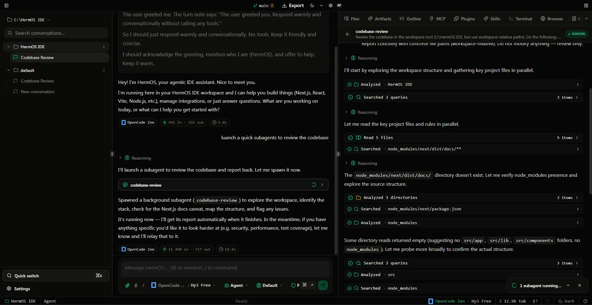

01 / AUTONOMOUS WORKERS
Subagent tree orchestration for parallel missions
When tackling complex refactors or multi-file features, HermOS decomposes the problem and forks background subagents. One agent investigates schemas while another writes unit tests and verifies fixes.
Subagent Trees
Independent forks
MCP
Tool integration
Headless Browser
Live DOM testing
